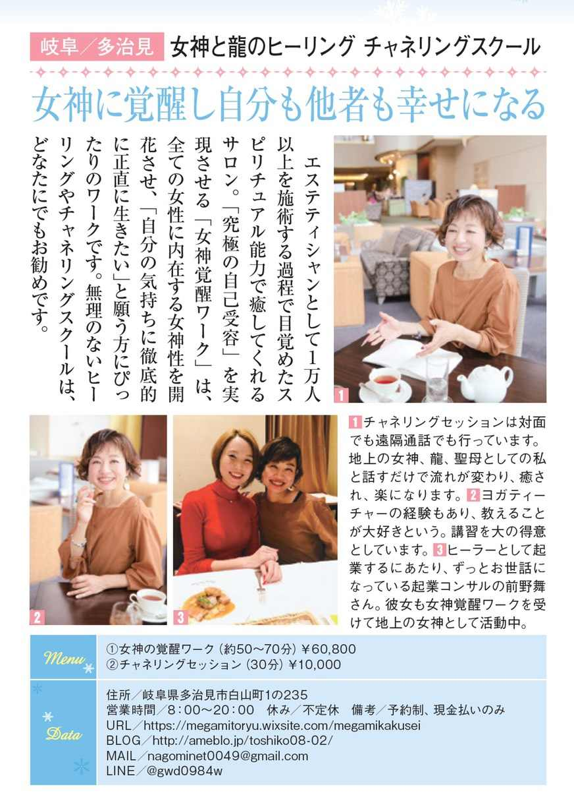
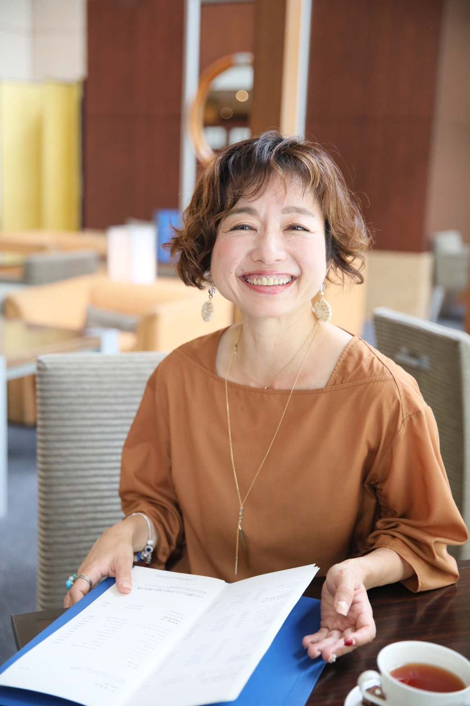
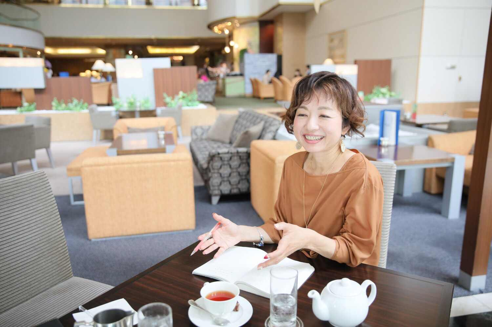
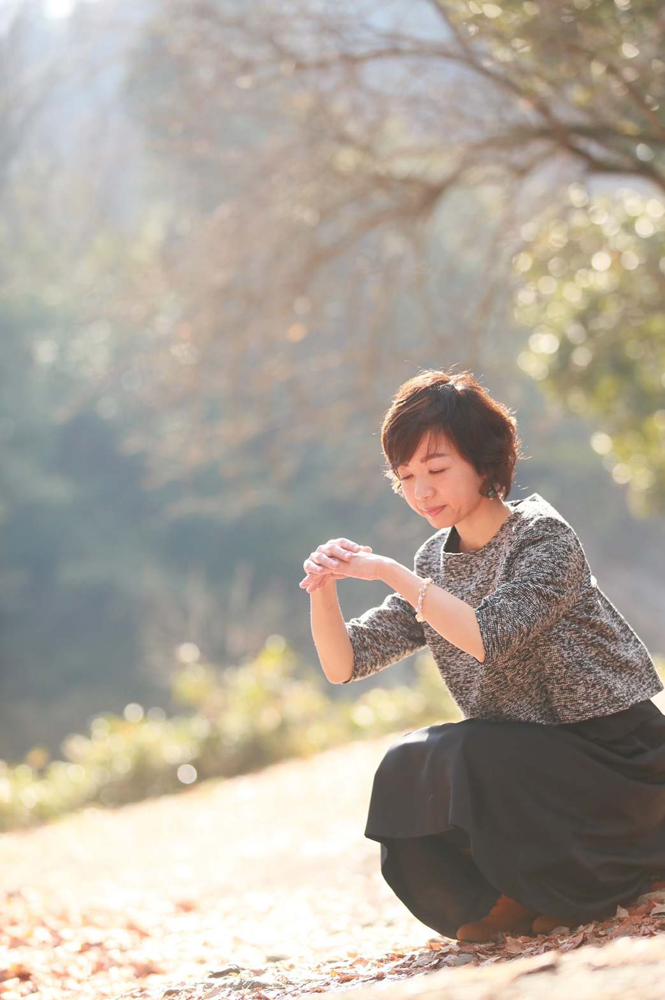
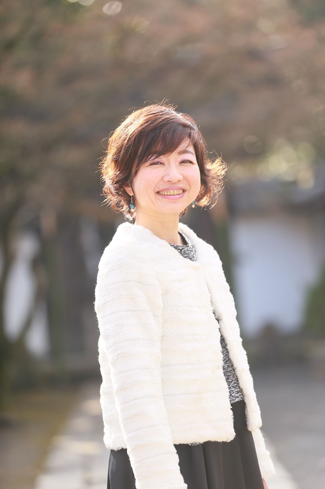
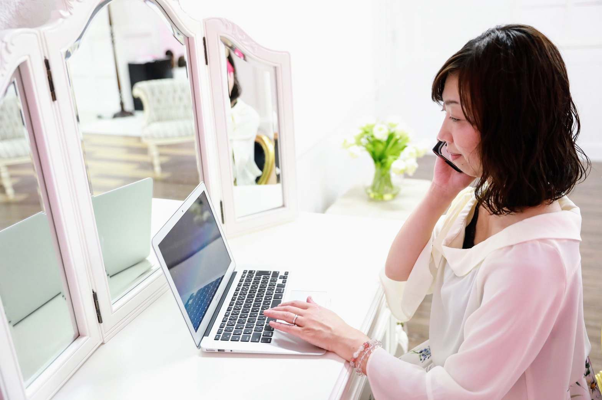
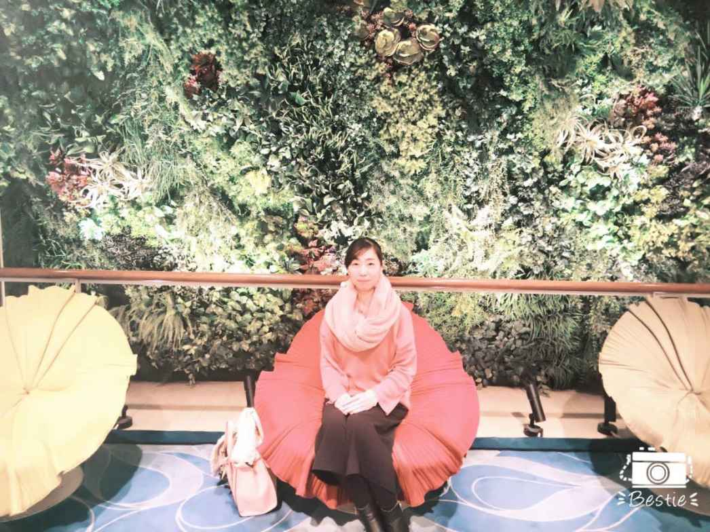
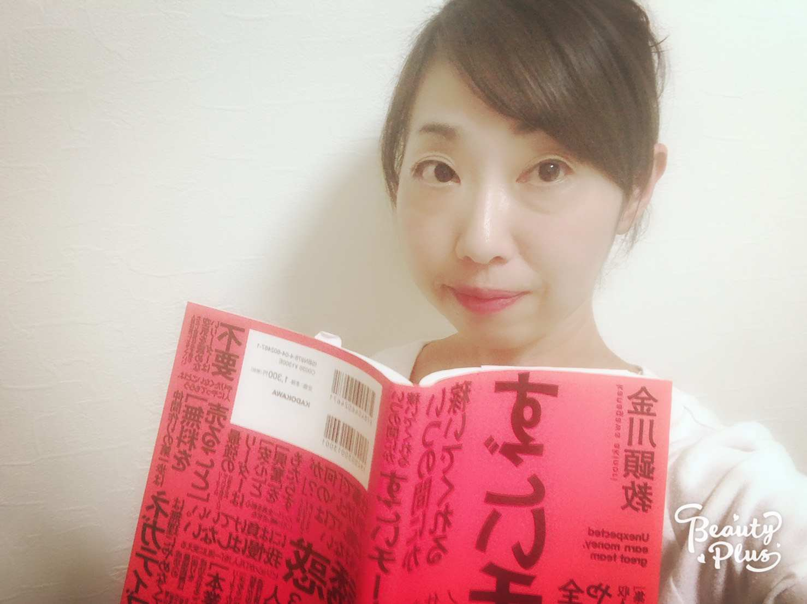
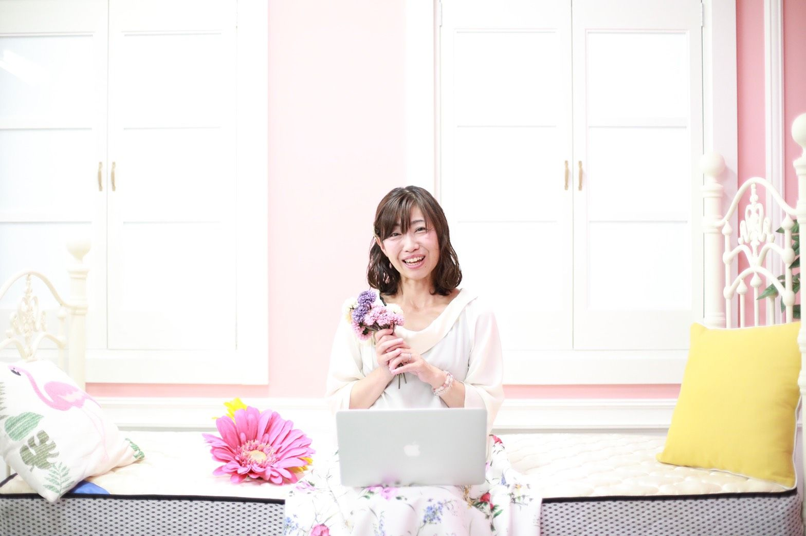

| 地上の女神覚醒へ 〜全ての存在を愛し愛される自分になる秘訣〜 | |
| 半澤登志子 & 月島ゆみ | |
| (2019) | |

anemone ２０１９年３月号掲載
「地上の女神よ、もっともっと世界へ羽ばたけ」
ヒーラーやエステティシャン、ヨガティーチャー、
クラシックバレエ講師、飲食店経営、起業コンサル、物販などの仕事で
この17
年で１万人以上の方々とご縁がありました。
現在はヒーラー、スピリチュアルティーチャーとして活動し
現在は、
地上の女神 全てを許しお相手を神に覚醒させる聖母
人間的制限を外し魂の望みへ向かわせるドラゴンマスター
霊障解消シャーマンエンジェルとして覚醒
２０１９年はこの電子書籍に挑戦し、
スピリチュアル専門誌 anemone にも掲載されました。
今まで、
世間的には成功している方
現状に満足できない
心身を病んでる方などいろいろな方々に出会うなか
私が気づいていたのが、
「何かや誰かに遠慮して自分を表現して生きられない」「自信がなくてどうしたらいいのかわからない」「人間関係やお金に悩みすぎている」「自分を愛する意味がわからない」と思いながら生きている方々が多い事。
周囲の人間関係にがんじがらめになって、
誰かの期待に応えるためにやりたいことができない人が多すぎる事でした。
そもそもあなたが誰かの期待に応えることに何か意味がありますか？
誰かの期待に応える人生を今すぐやめましょう。
特にご両親、ご主人。あなたの一番そばにいる家族です。
近い存在であればあるほど、私達は自分を悲しくも家族のために見失います。
「母親がこう言うから」
「子供が可哀想だから」
「この家に嫁いだから」
「言う通りにしておけば楽だし、喜んでもらえるから」
だから、自分は我慢する。
自分さえ我慢すれば。何も言わなければ空気乱れないから。
誰も悲しまなくてすむから。
本当に、本当にそれでいいんでしょうか？
本当にその考えはあなたにとっての正しさでしょうか？
誰かの正しさを、自分の正しさだと
思い込んではいないでしょうか？
何のために我慢しなくてはならないのでしょうか？
その考えは、本当に大切な周りの人の為になっているんでしょうか？
今、この時代は大きな変化の時を迎えています。
日本の教育体制はどんどん変わるでしょう。
みんなを一つの教室に閉じ込めることはなくなり、先生という大人もいなくなるかもしれません。ＡＩが教育者となる日が来て、タブレットが全てを教えてくれるでしょう。
義務教育というものがなくなる日がくるとしたら、
私達は何を子供たちに教えてあげられるのでしょうか？
私達は、どんな姿勢を、背中を、見せてあげればいいのでしょうか？
私には自閉症の息子がいる。
息子に私が教えているのは、
「自分こそは生まれてきてよかった」
「自分こそ、他の誰とも違う、唯一無二の素晴らしい存在」
と感じることができる自己愛の能力。
自分のやりたいことをやる勇気と決断。
嫌なことを断る勇気と決断。
人の顔色を伺わない勇気と決断。
周りに振り回されずに、自分の人生を生きる勇気と決断。
そして私は、このように生きられる人を「地上の女神」と呼んでいます。
私は今「地上の女神」を増やす活動をしています。
男性女性を問いません。性は関係ありません。
自分の本当の気持ちを知っている。
私達はもともと完全であり、
人間として産まれ制限を設けたからこそ、
完全ではない自分をありのまま見る。
自分が本当にやりたいことを知り、それをやる勇気と決断を持つ。
このように生きたいと思いますか？
ですが、このように生きる事は、
何度も言いますが勇気と決断が必要です。
「見たくない自分」を見なくてはならないからです。
乗り越えたら、またきて、また自分と見つめ合い、
見たくない自分を見て苦しみ、
また乗り越える。
これを繰り返していくからです。
女神は我慢しません。
だれかを救おうとか、
素晴らしい人であろうとか、優れていようとか、
そんな事は思っていません。
ただただありのままの自分を愛しているだけです。
唯一無二のありのままの
パーフェクトな自分を愛する。
たとえ見たくない自分の部分も愛するという事です。
私も何度も苦しみ、遠回りもし、時間を無駄にしてきた。
だけど、それも自分だけの、
自分が通ってきた、大切な大切なたった一つの道なのだ。
そう信じて生きてきた。
「私は苦しみながらも、唯一無二の存在として生きている」
そして、そんな女神を見て、周りは自然と影響されていきます。
「私もあんな風に生きよう」と。
だから、自分がやりたいことを見つけたら、想ったままに挑戦してください。
失敗する？ 成功する？ 結果はやってみなければわからない。
私達人間にわかる事なんて少なすぎる。
先のことを考えすぎて、可能性を潰さないでください。
どんな結果が出ようと、あなたが挑戦した事実は、あなたの貴重な経験になります。
結果が大事なのではなく
挑戦した事実が大事なのです。
私は、「やってみようかな」と想ったものには
全て挑戦してきました。
「失敗知らずなの？」
いいえ、違います。途中で「これ、合わないな」と違和感を覚えたら、潔くやめることもありました。そして、また新しいものに挑戦するのです。
「せっかく時間とお金をかけたのにもったいない」
そう思った時ももちろんあった。でも、私は
常に成長し、常に新しい事に挑戦したかった。
「一歩を踏み出すのがこわい」
「お金がない」
「家族に反対される」
「人に何か言われるのが嫌だ」
そんな言い訳をしていませんか？
どうでもいい、そんな事は。
少なくとも、私にとってはもはやどうでもいい。
やらない人は、どんなにいいチャンスがあっても、上手い理由をつけて逃げる。
自分から逃げている。
「やらないという選択」
を、積極的に決断していて、
本当に納得できているのなら、それでもいいでしょう。
だけど、本当は多くの人が「やってみたいのに」と悶々としている。
みんな逃げてる。
本当の自分に向き合うのがこわいから。
決断ができないから。
「人生は私の手の中にある」
だから、あなたがやりたいと想ったことをやってみてください。
これが正しい、これが間違っている。
私達はこの地球で、常にジャッジを繰り返します。
本当は、そんなものはない。
あるとしたら、
「自分にとっての正しさ」
これだけです。

私は、１９７１年に横浜市で生を受けました。
両親の転勤が多くて転校が多かったこと、そして私自身が風変わりな子供だったせいもあって、小学校ではずっといじめられていました。いじめに耐えられなくて、２年間はほぼ登校拒否。
中学でももう二度といじめられたくないという一心で、
本当の自分を押し隠してひっそりと暮らすようになりました。
「何か自分の考えを言ったら嫌われる」
そんな毎日は楽しくもなんともなかった。
得られるものもないし、生きている実感もない。
けど、いじめられるよりはまし。
無視され、靴をかくされ、給食を投げつけられ、
トイレで蹴られるよりはましだよ。
学校なんて行きたくない。
私には、明るくて前向きな思い出も、心から信じられる友人もいなかった。
高校を卒業。
四年制大学に入学するために、実家をでて横浜に行きました。
けど、横浜でも、私は自分が何をやりたいのかわかりませんでした。
ただひたすら漠然と日常を過ごして、時間だけがこぼれ落ちるように過ぎていく。
子供の頃から身についた「自分を押し殺すこと」が、私自身のやりたいことまで奪ってしまったのです。
こんな私にも、一筋の希望の光が差し込みました。20
歳の時に訪れたスペインです。
青い空、白い壁、底抜けに陽気な人たち。
この人達は心から人生を楽しんでいて、本当に憧れました。
スペイン語学科にいた私は、
スペイン語を活かした仕事に就こうと心に決めました。
貿易関係？ 旅行会社？
初めて、自分がやりたいことを見つけたような気がしました。でも
現実はそんなに甘くありませんでした。
４年生の頃はちょうどバブルが崩壊した時期で、とてつもない就職難の時代でした。
今では信じられないかもしれませんが「四年生大学を卒業した女はいらない」なんて言われたものです。
就職活動はことごとく失敗。30
社を受けて全部落とされました。
最終的に保険会社に就職しましたが、
ただただ嫌だ」という理由で、せっかく就職した仕事を投げ出してしまいました。
「大学まで出してもらったのに、仕事も続けられなくて申し訳ない」
「のこのこのと田舎には帰りたくない」
そんな意地と恥ずかしさもあって、そのまま東京に残り、生活のためだけに働くフリーターになりました。
それは、いつもお金と時間に追われるかつかつの生活。
毎日、職場と小さなアパートの往復の毎日。お給料をもらっても、家賃や光熱費などの支払いにみんな消えてしまいます。
「スペインなんて今度いつ行けるのかな」
そんなの夢のまた夢、貯金すらできません。そしてもう一つ私がいつも思っていた事は
「親孝行って、いつになったらできるのかな......」
22
歳から、ずっとこんな思いを抱えて暮らしてきました。
この頃から私は、お金に振り回されない自由な時間を持てる働き方に憧れていました。
毎朝ぎゅうぎゅうの満員電車に駆け込んで、ようやく会社に着いた頃にはボロボロ。デスクの上には、処理しなければならない書類と電話メモの山。
当時私は葛飾区金町から日本橋まで通っていました。
ただただそんな中での楽しみは、
毎朝電車から見える遠くの富士山でした。
綺麗だった。
富士山のように。どっしり生きたかった。
「今日もまた残業か......」
私の一日はため息から始まる。
「何のために働いてるんだろう」
やりたいこともなく、毎日の生活に楽しみも見出せませんでした。
お給料は支払いに消えるから、お洋服もお化粧品も買えなかった。
本当に、なんにも楽しみなんかなかった。
憧れの東京にいるはずなのに、いつもひとりぼっち。
何をしたらいいのか、何がやりたいのかもわからずに、
漠然と毎日が過ぎる中
ちょっとだけ心に引っかかっていたのは、「私はお勤めは向いていないのかも」っていう疑問。フリーランスや起業という働き方に憧れながらも、自分には縁のない話だと思い込み、生きるためだけに働き、若さと時間を無駄使いしていました。
小さなワンルームに寝転がり、狭い天井を見つめながら、
「お金が欲しい」「時給で働くかつかつな暮らしから抜け出したい」とつぶやく日々。
そんな私に、起業の話が舞い込みました。
25
歳の時、エステティック美容機器の販売を、業務委託でやってみないかとお声がけいただいたのです。
私は楽しくて仕方がありませんでした。今までとは全く違う世界に飛び込み、刺激的な人間関係にも恵まれました。
頑張ったら頑張った分だけ、お金になるし
時間を拘束されることもありません。５万円、10
万円、20
万円と売り上げが伸びると、心の中にふつふつと充実感が湧き上がってきました。お客様に喜んでもらえるのが楽しかった。
私は初めて、充実感と生きているという実感に満ち足りて
人に喜んでもらえるのって、こんなに楽しいんだ！」と心の底から思えたのです。
しかし、25
歳、若かった私は、自分が稼ぐことばかりに夢中になって、友達にも強引に販売してしまったのです。友達は一人、また一人といなくなり、いつの間にか私の周りには誰もいなくなってしまいました。
こんなに大勢の人間であふれている東京で、私はひとりぼっちになりました。
私を導いてくれていたメンターは常々、「わからないことは聞きなさい」「素直にやりなさい」と言ってくれていたのに
途中からメンターのアドバイスに聞く耳を一切持たずに、自己流で仕事をし、
結局私の元に残されたのは、２００万円の借金でした。
日曜日以外は毎日18
時間働き続けました。
若さだけが私の武器。借金返済のためにと、後先考えずに働きました。
若いとはいえあっという間に限界。
27
歳になった時、髄膜炎という脳の病気に冒されました。
仕事中にあまりの具合の悪さに耐えられず早退して、
アパートで苦しみにもがいていました。
苦しみのあまり寝る事もできない。
私は救急車を呼びました。
頭の中に神の声が聞こえたから。
「救急車を呼ぶのだ」
私はあの時の声のおかげで後遺障害に苦しむこともなく、元気に暮らせています。
私は自分を少しも大切にしていませんでした。
私は身体の声も魂の声も聞こえていませんでした。
病院のベッドで泣き続けた毎日。
それから私は、
命と時間の大切さというものを
真剣に考え始めた気がします。
退院して前向きに生き、とうとう２００万円の借金を返済し終えました。
晴れて自由になった気がした。重たい荷物を捨てられた気がした。
今の主人に出会ったのはその頃。
そのまま、30
歳で結婚しました。
夢の街東京を離れて、実家がある岐阜で結婚生活をスタート。
結婚生活はそれなりに穏やかでしたが、
唯一不満だったのは、
「自分でもう一度何かに挑戦して成功したい」という想い。
ヨガ講師をスタートし、クラシックバレエを教え、
最終的にはエステサロンも開業。
10
年の時がようやく私を癒して、一歩を踏み出すことができました。
エスティシャンとして毎日お客様のお肌に触れているうちに、
私は自分の手からエネルギーが出ていることに気づきました。
エステの効果以上にお肌と体調がよくなってきた、と言っていただけるお客様も少なくありません。
人にエネルギーを与えてあげることで、相手がどんどんよくなっていくのです。私は、どんどん本来の「人間が好き。目の前の人がよくなっていくのを見るのが好き。喜んでもらいたい」と
思うようになりました。
ただ、その時は手から出ているエネルギーには気づいていたけど、
まさか後々ヒーラー になるとは思っていませんでした。
エステサロンの経営は軌道に乗り、
ようやく、私は「自分で挑戦して成功すること」に一歩近づけたのですが、
なんと40
で子供を授かったのです。
結婚して10
年経っていました。
今まで仕事ばかりしていた私にとって、
母親になった喜びは言葉では言い表せないくらいでした。
自閉症の我が子が生まれてから２年間は育児に専念。
実家の近くにサロンを移転させて、気持ちを新たにエステサロンを
リニューアルオープンに踏み切りましたが、
そんな私にも、また苦しい日々がやってきました。
朝起きてバタバタ保育園に連れて行き、接客、施術。
あっという間に夕方になって、保育園にお迎えに行き、夕飯のお買い物に、夕食作り、後片付け。終わりがないルーティン作業。
せっかく家に帰ってきたのに、私に構ってもらえない子供は、
ギャンギャン泣きました。
全くとれないどうしようもない疲れ。
特に夕方以降のバタバタは、高齢で産んだ私の身にはかなりこたえました。
自閉症の我が子は、普通の子供より手がかかります。
夜もなかなか眠らない。アレルギーとアトピーで食事もかなり
気を使う。あれ食べちゃだめ、あれもこれも、だめ、だめ、だめ。
毎日が地雷を避けながら歩いているような緊張を強いられます。
身も心もヘトヘトになりながら、育てました。
ある日私は運転中に激しい動悸におそわれました。
そして電車や車に乗ることができなくなりました。
車がなければ生活できない岐阜では、仕事をすることも保育園に預けることもできなくなりました。頑張っていたエステサロンも続けられなくなり、収入は激減しました。
不安でいっぱいの毎日の中。
私は再び神の声を聞きました。
「ヒーラーになる」
しばらくしてから、
「無条件の愛のヒーリング」というものに出会い、
それから
「女神覚醒ワーク」を受けて私は地上の女神になりました。
怖くて怖くて握ることができなかった車のハンドルを、
握れるようになり、
子供を保育園まで送れるようになりました。
それから２週間。子供を保育園に送った帰り道に、またそれは聞こえてきました。
「大丈夫、大丈夫。自分を大切にしなさい。自分を愛しなさい。
そして信じなさい。大丈夫だから前に進みなさい」
その存在は
私と一緒にハンドルを握ってくれていました。
気付いたら、涙がボロボロこぼれていました。
エステティシャンとして、これからやっていけるかどうかわからない現状。かわいい子供のためにもっと頑張りたいのに、体も心も言うことを聞かない毎日。
お金のこと、健康のこと、子供の声、
自分の未来のこと。私には無数の不安がありました。
私は、髄膜炎になった時と同じ事を繰り返していました。
そんな私の本当の気持ちを、「神の声」が教えてくれました。
私は必死だった。でも、私なりに精一杯頑張ってきた。
目の前から逃げずにやってきたじゃん。
無理したかもしれない。だけど、わかって良かったじゃん。
自分のために生きることが、子供やみんなの幸せに繋がることにようやく気付いたじゃん。
こうやって自分に話しかけながら、
私はその存在と一緒に家に帰りました。
ヒーリングエネルギーを受け取り、
心にゆとりができた私は、この軽い心と体を、誰か他の人にも体験してほしいと思うようになりました。そして、またあの神の声を思い出しました。
「ヒーラーになる」
「私もヒーリングエネルギーで誰かを癒したい」
私に「やりたいこと」が生まれたのです。子供や家族、周りの人が幸せになれるように、私がエネルギーを流してみよう、と思いました。そうやってスピリチュアル業界に足を踏み入れたのです。
私を満たしてくれたのは日本全国、そして世界中の人々との出会い。エステティシャン時代は、エステサロンに通える範囲の人々としか触れ合うことができませんでした。でも、今はどんなに距離が離れている人とも、繋がることができるようになったのです。
私は幸せになりたかった。
いえ、今でも、
自分だけの幸せを見つめ続け、
もっともっと幸せになります。
そう決めている。
だから、見ていてくださいね。そう話しかけている。
見ていて、私を。
唯一無二である私は、こう生きているよ。
人間として、自分の課題に
毎日向き合っているよ。
自分にとっての正しさ。
自分だけの幸せ。
決断というのは、ものすごく強い波動を持ってると思う。
強く、かつ軽い。
人は決めると軽くなる。だから進める。
悩んだり迷ったりしてもいい。進めなくてもいい。
決められるまで。とことん向き合ってください。
私は怖かった。未知の世界に足を踏み入れるのが。
だから私も悩み、迷った。
だけど私は変わりたかった。
そして、今もこれからも、
もっともっと自分と向き合って変わっていく。
それが結局は周りの人の為になる。
そのつど自分に正直に、そして自分を大切に生きること。
私はたった一人の大切な存在だと認め、
幸せになると決めること。
あなたとあなたの大切な人を幸せにする第一歩です。

組織に属している方は、
知らず知らずのうちに空気を読んで周りに合わせてしまう。
それが嫌で、組織がずっと苦手だった。
「先輩が言っていたから、とりあえず私も同じように言っておこう」
「とりあえず、こう言っておけばこの場が収まるだろう」
「波風を立てたくないから、とりあえずやっておこう」
とりあえずって便利な言葉だなあ。
でも、自分の気持ちを見て見ぬ振りもできる言葉だ。
仕方がない時もある。
でも、なんか違うなあ。
そうやって、
本当の自分は何を感じているのかなって。
その内なる声に耳を傾けてください。
「本当は私はこう思ってる」
「少なくとも私にとってはこれは正しい」
それをいつも意識すると
とりあえず周りに合わせて無難にやり過ごそうという思考を捨てられる。
知らず知らずのうちに重い荷物を背負ってる事に気付いて！
それから
誰かに作られたスケジュールに追い立てられると
時間も心のゆとりなくします。
あなたが本当にやりたいことを、最優先にするのです。
時間やお金に追い立てられてはいけません。
時間の使い方はあなたが決めるのです。時間の使い方は命の使い方です。
もちろん、全てを自分の思い通りにすることなんてできません。
でも意識だけでもいいんです。あなたが本当にしたいことをして
会いたい人に会ってみよう。
私達は本当は、自分で何もかもを選ぶ事ができる。
そして、そうしよう、と決断する事も。
休みたい？休めばいい。
サボる事に罪悪感を感じますか？
でも、あなたが今やりたいことを最優先にしないと
結局は何かを集中してやりとげる事できない。
２０１６年頃から我がままに生きる女性が増えてる。
敏感な人は知らず知らずのうちに、宇宙のメッセージを受け取っているのかな。
我がままに生きる事を多くの日本人は悪い事だと思ってる。
そのように育てられできた私達。わがままはやめなさい、
人にあわせて生きなさい、空気をよみなさい。。
わがままに生きたって、マイナスなことが起こることはほとんどありません。
「自分のやりたいこと」をする事が
「わがままで悪い事」と思い込んでいませんか？
自分に素直に生きよう。
そうすれば自然とお金が入ってきますし、夢がいつの間にか叶う。
２０１９年は、我がままな女神が活躍する時代です
そうすれば、あなたも、あなたの大切な人も幸せになれます。
自分を解放して自分らしく生きている姿を見た周りの人たちは、
あなたを見習いどんどん幸せになるのです。
男性女性問わず、
女神とは、自分の人生を丸ごと愛することができる人です。
他人の評価や期待に振り回されることはありません。
自分を卑下する事がないから、人も見下さない。
自分の気持ちを大切にできるから、
他人の気持ちも大切にして受け入れることができる。
誰にも遠慮せず、自分自身でいることが、
何よりも自分も周りも幸せにすることをわかっている。
「これが、私だ」
「私こそは、生きているだけで素晴らしい」
「だから、理由なく、無条件で、あなたも素晴らしい」
私が提供している
「女神の覚醒ワーク」で、
地上の女神になってみませんか？
自分の深い欲求を知ること。
「私はいったい、何がしたいんだろう」
あなたが本当は何を欲しているのか、あなたの秘めた願いは何なのかを、深掘りする。
「なぜ？」
あなたの願望、欲望になぜを徹底的にぶつけてください。
どうして私はお金が欲しいの？ なんで私は愛を求めているの？
答えはすぐに出ないかもしれない。
でもなぜを繰り返していくと、
あなたが本当に欲しているものの輪郭がはっきりとしてくる。
私が提供している「女神の５つのワーク」は、
本当の自分の願いを知る後押しをしてくれます。
本当の願いを知るのはとても大変ですが、
知った後の喜び、生きるのが楽になる感覚を
ぜひ知ってください。

今のままではダメだなって、うすうす気が付いている方もいらっしゃるでしょう。
「変わりたい」
「でも、どうすればいいのかなあ」
「何から始めればいいんだろう」
まずは、その「変わりたい」という願いに正直になってくださいね。
そして、ピンときたものがあったら、すぐに行動に移してください。
行動しなければ結果はついてきません。
「本当にこの道で合ってるんでしょうか？」という質問をいただくことも多いですり
道は１つじゃない。
その時その時、その人が何を選ぶかで変わってくるので、一概に「これが正解です」というものはないんです。
でもね、人間は正しい道はこの１つだけ、と思い込んでいるところがある。
その不安を払拭できるのは、行動することだけです。
行動しなければ、自分にとっての正しさは絶対にわかりません。
絶対にわからないのです。
突き詰めれば、この世の中には失敗も成功もないと思っています。
単なる経験しかない。
あなたがもし、世間が言う「成功」を望むのであれば、
とことん成功を目指してがむしゃらに努力してみましょう。
すると見えてくる世界がある。それに向けた自分の経験。
それがあなたの宝になります。
結果がどうこうではないのです。
私は、そんな宝をたくさん持っています。
死ぬ時に、私はその宝を持って
神様に言うでしょう。
「私は、私にしか見えない宝を持ってきたよ」
「こんな人に会って、こんな事も、あんな事もしたよ」
その世界を見ることができたら、結果が成功であれ失敗であれ、
あなたは本当に望む世界に到達しているはずです。
誰に何を言われようと、自信を持てなかろうと、あなたがやりたいと思うこと、なりたいと思うものに素直になって、どんどん行動してください。
あなたが今悩んでいることは、あなたが行動に移してがむしゃらに努力すれば、些細なことに変化するでしょう。
人間は、悩みの渦中にいるとなかなか気づきません。
これまでの人生で抱え続けてきた不安をいきなりゼロにすることなんてできない、という方も少なくありません。
でも、そんなあなたでも大丈夫。
私も、ヒーリングに出会い、自分のやりたいことに気づいたことで、
人生が大きく変わりました。
私の人生はいつも、幸せと愛に満ち溢れ、
守られていた。
あなたの苦しみの原因は、たくさんあるでしょう。
お金、時間、健康、人間関係。
でもそんな事も、あなたが「自分を愛する事」さえ
やめなければ大丈夫なんです。
私にしか生きられない、私だけの人生を生きる
地上の女神が増えて
たくさんの方々がたくさんの方々に影響を与えられますように。
本当の愛と、自分にとっての正しさを知る事ができますように。
こうやって、私が経験したこと、私の考え方を実践して起業し、
自分自身を取り戻した人物がいます。私の妹です。彼女は女神になることの大切さ、女性がわがままになり、自分のやりたいことに素直に生きることの素晴らしさを、私の生き方を見て学びました。そして実践して、心にも余裕ができて、本当の自分を取り戻しイキイキと暮らせるようになりました。
これまでのお話を読んで、半信半疑のあなた、女神として覚醒したらどうなるのか興味があるあなたはぜひ、私の妹の実体験を読んでみてください。

スピリチュアルヒーラー
カウンセラー
エステティシャン
エステサロンオーナー
マインドフルネススペシャリスト
半澤登志子
１９７１年８月 横浜市生まれ
岐阜県多治見市在住
エステティックサロン なごみサロン
ヒーリングサロン
女神と龍のヒーリング を経営
大学卒業後
保険営業 化粧品販売 飲食店店長
クラシックバレエ、ヨガ講師などを得てエステティシャンに。
１万人以上の人と触れ合ううちに
スピリチュアル能力に目覚めてヒーラー になる。
パニック障害、
摂食障害を
ヒーリングとマインドフルネスな
瞑想で克服できた経験がある。
教える事が大好きで
各種ヒーリング講習をはじめ、
現在は
「地上の女神を増やす」ワークを提供する事で、
人がより自分自身の人生を生き、
幸せになるためのお手伝いをしている
40
歳で自閉症の子供を産んだ経験を活かし
自閉症の子育てアドバイス
親へのカウンセリングも勉強中
趣味はヨガと旅行
花を買うこと、ケーキを焼く事
時々英語を勉強する事
ブログ
https://ameblo.jp/toshiko08-02/
LINE@
https://line.me/R/ti/p/%40gwd0984w
ホームページ
https://megamitoryu.wixsite.com/megamikakusei
私は、子育てと仕事に追われ、自分をなくしてしまった主婦でした。私だけが特別ではありません。日本中にいる多くの女性が、結婚や子育てで自分のやりたいことを忘れ、自分のことは後回しで家族に尽くしていると思います。
もちろん、それは悪いことではなく、素晴らしいことだと思います。でも、子育てを終えた時あなたの元に残るものは何でしょうか？ 私は、子供たちから手が離れた時、呆然としました。「私は何をすればいいんだろう」って。
でも自分がやりたいことをやるべきだということに気付き、行動に移したことで本来の自分を取り戻し、私らしい人生を送れるようになりました。今が、一番幸せと断言できます。
もし、あなたが昔の私のように自分がやりたいことを後回しして、周りの人に尽くしているのであれば、まずは私の話を聞いてください。そして、あなたが本当にやりたいことに素直になって、人生を取り戻しましょう。

私は22
歳の時に結婚して、24
歳で最初の子供を授かりました。そのあとは、間を空けず２人目、３人目にも恵まれて、20
代と30
代は育児に翻弄されて、あっという間に過ぎ去りました。子供が３人いると、生活は決して楽ではありません。１人だけなら大したことがない出費でも、３人になると家計には大きなダメージです。
だから、３人目の子供が生後６ヶ月を過ぎたあたりで、保育園に預けて働くことにしました。３人の子供の面倒を見ながら、働くことは容易ではなく、毎日が仕事と家事と育児で終わる毎日。
「これ、やってみたいな」
と思っても、やろうとする気力すら残されていない毎日でした。自分がやりたいことよりも、毎日のルーチンワークをこなすので精一杯。心の余裕はゼロで、スキンケアもできなければ美容院に行く時間もゆとりもありません。
朝起きたら、「また１日が始まるのか」とぐったりして、夕方には仕事で疲れた体に鞭を打ち、食事の用意、お風呂、歯磨き、寝かしつけ。ようやく寝かしつけても、「ここから夜泣きが始まるのか......」とどんよりします。
「あっというまに１日が終わった......」
「私、仕事と家のことしかしてない......」
毎日の家事と育児に追われて、疲れて果てる私の心と体。そして、それに対して苛立ちを覚える自分に対する罪悪感もありました。かわいい子供たちのために仕事と家のことをしているのに、空虚さを感じてしまうと申し訳なくて仕方がなくなるのです。でも、「本当の私はどこに消えたんだろう」という思いでいっぱいでした。
私も主人も実家が遠方ですし、親戚もいないので頼ることもできません。もちろんお手伝いをお願いできる友人もゼロ。唯一の相棒である主人は、朝から晩まで仕事で家にはいません。今風にいうと、「ワンオペ育児」です。
今みたいに、食洗機や洗濯乾燥機、自動掃除ロボットは存在しない時代。毎日の家事だけで途方もない労力が必要でした。しかも、今ほど家事代行やベビーシッターさんが市民権を得ていない時代。「共働きでも、女性が家事と育児を全て担うのは当然だ」という風潮でした。
私も、それを当たり前だと考えて、ボロボロの体を引きずりながら、なんとか嵐の子育て時代を乗り切りました。でも、私だけが特別ではありません。今も昔もママたちは、全員同じ悩みを抱えています。むしろ、今のほうが子育てを手伝ってくれる祖父母世代と離れて暮らす家族が増え、子育ての悩みは深刻化しているはずです。
私の子育ては、40
代で終わりを告げました。子供たちが全員社会人になって独立したんです。もう子供のために食事を用意したり、洗濯をしたり、お掃除をしたりする必要はありません。ようやく自分の時間が持てるようになったんです。
でも、その時、私の中には何も残されていませんでした。
「私はこれから何をして生きていけばいいの？」
子育てと仕事しかしてこなかったので、やりたいことが何も見つからないんです。
「私、何がしたいんだろう？ 何がやりたいんだろう？」
いくら考えても結論は出ません。仕事は続けていましたが、手に職があるわけでもありません。就職や独立に有利な資格も持っていません。打ち込める趣味もゼロ。まさに無い無い尽くしです。
必死に子供たちを育てながら仕事をしていたのに、私の中には何にも残らず空っぽだったのです。何にもできない普通の主婦の私。40
代になって急に好きなことができるよ、と言われても何をしていいかもわからず、何もできないと決めつけて、呆然としていました。
結婚が遅かった友人は、子育て真っ盛り。子供を持たない選択をした友人は、キャリアを積み上げて社会的地位と裕福な暮らしを手に入れています。私みたいに、何にもできない普通の主婦が40
代でいきなり自由になっても、何をやるべきなのかも全くわからないのです。
例えて言うなら、真っ黒な山道でライトがつかない車を渡されて、「好きなところに行っていいよ」と言われたようなものです。本当はどこにでもいけるはずなのに、ライトがつかないから真っ暗で一歩も進むことができません。
いくら考えても何も思い浮かばず、ひたすら時間だけが過ぎていきました。
「このまま私は年老いて、人生で何をしたのかもよくわからずに死んでいくのかな」
そんなネガティブな感情が私を覆い尽くして、やっと好きなことができるようになったというのに、私の心は曇り空でした。
何をすべきかわからないと悩み呆然とする私に、追い打ちをかける出来事がありました。それが椎間板ヘルニアです。あまりの痛みで、立つことも座ることもできず寝たきり状態に陥ってしまいました。
もちろん。仕事なんてできません。でも、我が家は私が仕事を休んだら生活ができないんです。寝返りを打つにも脂汗が吹き出るような痛みの中、働くという選択肢しか残されていませんでした。
その時、ようやく私は気がついたんです。
「これじゃダメだ。変わらないと！」
これから、歳を重ねれば体のあちこちに不調が出ることもあるでしょう。急な病気で入院し、働けなくなる期間が出てくることは容易に想像できます。このリスクは、私だけでなく主人にだってあります。
だからと言って、何をすればいいのかはわかりません。そんな時、姉から月商６４０万円稼いでいる女性がいるという話を聞きました。ビジネススクールに入ってノウハウを学び、起業しているというのです。
ビジネススクールのメンバーは全員自立した女性。彼女たちがそれぞれ起業して、自分の力で少なくはない収入を得ているのです。
「これだ！」
と思いました。私には才能がないどころか、極度のあがり症で、人前に出れば手も足も震えてしまいます。でも、ここで変わらなければ一生お金に悩まされ、心と体の健康を損なってしまうと思ったのです。
ビジネススクールでは、ビジネスをする上での考え方やノウハウを一から教えてくれました。私がすることになったのは、ＳＮＳ起業です。家にパソコンすらなかった私ですが、挑戦しなければ何も始まらないと、勇気を振り絞りました。
「やらなきゃ何も変わらないよ」
そうやって、姉が私の背中を押してくれました。私は、そうやって変わった姉の姿を見ていました。だから、自分も頑張れると思ったのです。
「これが、人生最初で最後の挑戦だから頑張れる！」
そう自分に言い聞かせました。
私が、所属しているビジネススクールは、ママによるママのためのビジネススクールです。成功者からビジネスのノウハウ、考え方をレクチャーしてもらい、教わった通りに行動しただけで、私も成功への第一歩を踏み出すことができました。
今は、ビジネスも順調で、自分らしく充実した日々を過ごしています。眠っていた本当の自分を思い出し、自分の欲求に正直に行動できるようになりました。ビジネススクールに所属する、前向きで向上心がある仲間と出会い、毎日パワーをもらっています。
私がやった事といえば、勇気を出して一歩を踏み出し、成功した人から成功したやり方を教えてもらい、それを素直に行動しただけです。パソコンのない私は、作業はスマートフォンでしました。
スキルも能力もない普通の主婦だった私でもできました。
「もう歳だから無理よ」
「新しいことを覚えるなんて到底できない」
「体力がないからできない」
そう思う方も多いと思います。私も何かやろうと考えた時、思い浮かんだアイディアをそうやって全部打ち消していました。自分の可能性を自分で潰していたのです。
でも、自分を変えられるのは自分だけ。何歳からでも変わろうと思ったら、人は変われるのです。変わろうと思った時点で変わっていると言ってもいいでしょう。年齢なんて関係ないのです。有名なフライドチキンチェーンを構築した男性は、60
代で起業しました。そして、全世界にチェーンを抱える超一流企業に成長させました。
挑戦に年齢は関係ありません。自分の可能性の芽を摘み取らないでください。やらなければ、何にもできないまま終わります。でも、挑戦すれば、必ず何かしらの対価を得られるのです。

あなたは、新しいことを始められる年齢の上限は何歳だと思いますか？ 20
代？ 30
代？
それは間違いだということは、もうわかっていると思います。人間は死ぬその瞬間まで、新しいことに挑戦できます。遅すぎることは決してありません。これからあなたはどんどん歳をとります。この先の人生で、今が一番若いんです。今を逃せばどんどん歳を重ねるだけ。
ゾッとしますよね。だから、堂々と新しいことにチャレンジしましょう。あなたが前向きに挑戦している姿は、美しいはず。何かに真剣に取り組む女性はキラキラと輝いて見えるんですよ。人を惹きつけるオーラが出るんです。
周りの人はあなたを見ているだけで、ウキウキと楽しい気分になるはずです。あなたが前向きに挑戦していれば、あなたの周りには前向きな人々が集まり、あなたに力を貸してくれます。チャンス・お金・人脈という成功のための必須条件は、「ひと」が運んでくるのです。
その「ひと」を呼び寄せるのは、あなたのキラキラオーラです。挑戦すること、心から楽しいことをやっていることで発せられるオーラに、人は引き寄せられます。
「私なんて何もできない......」
「どうせ私なんか......」
「デモデモダッテワタシナンカ」
こんなことを言っている人の周りには、似たようなネガティブで言い訳ばかりしている人が集まってきます。ネガティブな人たちが、チャンスや人脈を運んでくると思いますか？ 彼らが運んでくるのは、愚痴と後悔だけです。
だから、あなたは年齢を言い訳せずに、自分の好きなこと、新しいことに挑戦してください。あなたの将来を創れるのは、あなただけなんです。
多くの女性、特に日本人女性は、自己評価が非常に低いです。そして、自分を低いところで決めつけてしまっています。
「私はこういう人間だから」
「私の考え方はこうだから」
そうやって、自分を縛り、決めつけて檻の中に閉じ込めてしまっているのです。自分の自分に対する認識をセルフイメージと言いますが、セルフイメージが低い人のほとんどがこう考えています。
「私はんて何もできないから」
「取り柄も何もない平凡な女だから」
そうです。私も挑戦しようと決めるまでは、そうやって自分を決めつけていました。
「家事と育児と仕事の両立なんて誰でもやっていることで、すごいことじゃない......。失敗ばかりしている、何の取り柄もない普通の主婦......」
そうやって思い込んでいるんだから、失敗するのは当たり前。自分で自分を檻の中に閉じ込めて、羽ばたけないようにしているのだから。
じゃあどうしたらいいの？
答えはとっても簡単。セルフイメージを上げればいいんです。家事と育児と仕事を両立して、子供たちが社会人になり独立することって、とってもすごいこと。この時代にみんな就職できて、元気に一人で暮らせるなんて素晴らしい。
そうやって、自分を褒めてあげてください。
「毎日一人で家のことをやって、子供を育ててる私はすごいんだ」
「何年も同じ会社で働き続けることは尊いこと」
あなたが経験したことは本当は価値があることで、とっても大切な宝物なんです。いきなりそんなこと恥ずかしくてできないって？ だったら、口癖を変えてみましょう！
口癖を変えるだけで、セルフイメージが上がるの？ 答えはイエス！ 上がりますよ。言葉は必ず現実化します。いいことも悪いことも、言ったことがいつかは現実になるんです。昔から「言霊」って言いますよね。
「暑くて具合が悪くなりそう。暑いしんどい」
こんなことばかり言っていると、本当に具合が悪くなってしまいます。でもこう言ったらどうでしょうか。
「今日は暑いから、体調を崩さないために水分補給をしっかりして、塩飴を舐めよう」
そうやって口に出せば、水を飲まざるを得なくなり、塩飴も舐めます。きっと体調は崩れませんよね。ネガティブなことでも、プラスに変える言葉を選べばいいんです。
「私なんか何もできない」じゃなくて、「私ならなんでもできる。みんなができるなら私もできる！」
そう言い続けていれば、きっとあなたはできるようになります。そして成功体験が積み重なれば、あなたのセルフイメージは自然と高まり、自分に自信が持てるようになります。
あなたが本来持っている能力を自然と使いせるようになり、いつの間にかあなたが口に出した夢が現実に変わっているのです。ちなみに、私が最高だと思う口癖はこちらです。
「私って本当にすごい！ 何一つできないことなんてないわ！」
恥ずかしいですか？ そんなことありません。今こっそり呟いてみてください。心の中がポカポカとして、やる気が満ち溢れてくるはずですよ。
あなたには生き甲斐がありますか？ 今、私にはあります。でも、子育て時代は何もありませんでした。子供の成長だけが生き甲斐といったところでしょうか。それほど、子育ては女性の心と体を独占する大仕事です。自分の時間はほとんど持てませんよね。
家で育児と家事をしている時が一番疲れて、会社で働いているときは休憩時間だ、と思ったこともあるほどです。育児は、自分の思う通りにはなりませんし、時間も自分ではコントロールできないので、本当に大変。
でも、そうやって身を削りながら子育てをしていると、ひと段落した時、この先どう生きていけばよいのかわからなくなっちゃうんです。私のように。
でも今は、あの日勇気を出して一歩を踏み出したおかげで、夢を叶えて生き甲斐も見つけました。けど、子育て中に、今のビジネスを始めていたら？ 仕事と家事に忙殺されることはなかったのでは？
だから、絶賛子育て中のママたちには、今すぐに自分のやりたいこと、生き甲斐を探してください。もし、今日人生最後の日だったら何をしたいですか？ 洗濯？ お掃除？ 違いますよね。あなたがやりたいことをやるはずです。会いたい人に会いに行くはずです。
時間は無限ではありません。ときが過ぎるということは、命を削っているのと同じことです。子育て中だから、仕事が忙しいからと自分に言い訳することなく、自分の心に従ってください。
そして、あなたが本当にやりたいことに向き合って、行動に移す。そうやってあなたが自分を取り戻すことが、成功への第一歩です。
あなたの周りには、すぐに否定する人、自分が正しいと思い込んでいる人はいませんか？ どこの世界にもそんな人はいて、周囲の人を不快にさせています。何かをやりたいと思ったら、否定。新しい事業がスタートしたら、「失敗するよ」と難癖をつける。聞いていると嫌な気分になりますよね。
確かに、独りよがりな人や、否定的な人と話すことは面白いことではありません。でも、ちょっと待って。実は、その人が言っていることは間違っていないかもしれませんよ。彼らの嫌な言葉は、全てが間違いではないかもしれません。中には真実が紛れていることもあります。
違う視点で物事を考えることは、とっても重要。誰かに否定されたからと言って思考をストップするのではなく、立場を変えて考えてみてください。
「私にも原因があるのでは」
と思い当たることがあるかもしれません。私は誰かに酷いことを言われたとき、否定されたときは、「私の態度の鏡なのでは？ 私に落ち度があるのでは？」と考えるようにしています。
実際は、その人が悪意のかたまりということもありますが、視点を変えることで、私の考え方に広がりが出るのです。否定されることで、私の思いも寄らない落とし穴に気づくことがあります。何度か、そういう人のおかげで失敗を回避することができました。
これは、ビジネスの世界にも大切なこと。「素直に聞くこと」で、多くのものを吸収できます。成功者の話に耳を傾けてください。必ず成功のノウハウが詰まっていて、真似をして実践するだけで、今よりもよい方向に向かえるはずです。
独りよがりになり、自己流で進めても失敗が待っているだけです。成功への近道は素直になって、実践することが大切なんです。何かで成功している人は、みんな人生の師匠だと思って話を聞いてみてください。きっとあなたの人生は変わります。
ただし、ビジネスにおいては「成功者」の言葉に素直になってくださいね。成功者に嫉妬している否定屋さんの言葉に耳を傾けても、あなたの心がネガティブになるだけです。尊敬できる成功者に話を聞きましょう。それだけで、あなたの人生は大きく開けます。

人生を変える要素って何だと思いますか？ お金？ 人間関係？ 恋愛？ 目標？ 全部必要だと思いますか？ 人生を変えるには、何から何まで変えなきゃいけないって思っちゃいますよね。でも、答えはノー！
この中の１つを変えるだけで、人生を簡単に変えることができます。じゃあ何を変えたらよいのでしょうか。私は、迷いなくお金をチョイスしました。なぜかと言うと、お金を稼ごうと思うだけで、人生を簡単に変えられるからです。日本人はお金を稼ぐことにネガティブな印象を持ちがちですが、そんな思想は捨ててください。
まず、お金を稼ぐという目標は、目標の達成具合が簡単にわかります。さらに、お金を稼ぐためには、転職や副業、起業する、などの「大きな変化」が必要ですよね。
転職したり副業を始めたりすると、環境が変わり人間関係も変わります。するとあら不思議。すぐに人生が変わるんです。出会う人たちが変われば、新たな恋愛のチャンスが生まれるかもしれません。
つまり、お金を稼ぐだけで、全てのことが変わるきっかけになるのです。私はビジネススクールに入り、お金を稼げるようになって全てが変わりました。夢は叶い、やりがいのある仕事と、向上心あふれる仲間に囲まれています。
家事と育児に追われてボロボロだった私も、育児から解放されたのに抜け殻になってしまった私もいません。自分を成長させてくれる最高の環境の中で、自分らしく輝ける人生をこの手にしました。
それは、「お金を稼ごう」と心に決めたから。お金を稼ごうと決意したことで、人生が１８０度変わったのです。
あなたは、家族や周囲の人々に期待しすぎていませんか？ 私はそうでした。子供たちには、なんで成績が上がらないの？ どうしてお手伝いをしてくれないの？ と毎日過度な期待をしてはイライラを募らせていました。
仕事に関してもそう。なんで、こんな待遇なの？ どうしてもっと評価してくれないの？
子供たちが生まれたとき、「元気で育ってくれればそれでいい」と心から願ったことなど忘れて、大きくなればなるほど、期待を背負わせすぎていました。もっと周りの人は私を助けるべきだ、と考えていました。
だから、トラブルも多かったし、家庭も仕事もギスギスギスギス。
でも、それは間違いだと気付きました。してもらう事ばかり求めていてはダメなんです。相手の態度は自分の鏡。相手のために何かをしてあげなければ、相手だってあなたには何もしてくれないんです。
だから、私は周りに期待することはやめました。期待しなければならないのは、自分自身なんです。自分自身が満たされていない部分を、相手に求めてばかりいました。
他人に期待せず、自分に期待してみてください。そして、自分を大切にしてください。自分を大切にできれば、心に余裕ができ、相手のことを思いやることができるようになります。
誰かに「してもらう」のではなく、「してあげる精神」はビジネスにおいても非常に重要です。ビジネスとは、「お客様の悩みを解決してさしあげる」こと。どうやったらお客様の悩みを解決できるか、常にお客様の心に寄り添う事を忘れずに考えています。自分の売り上げを上げることを考えるのではなく、相手の立場になってどうやったら、お悩みを解決できるのかを考えてみましょう。
私は、起業する時、家族には何も伝えませんでした。だって、40
代のパソコンも使えない妻、母親が起業するなんて聞いたら私の家族たちは反対するに決まっています。だから結果を出してから報告しようと思いました。
でも、家族は私が努力している後ろ姿を見て、「よくわからないけど本気なんだ」と感じてくれて、私のサポートをしてくれるようになりました。
心に余裕ができた私は、ギスギスしていた主人との関係の修復にも成功しました。結婚して数十年経っていると、お互いを思いやる気持ちやドキドキは消え失せて、家族になってしまいます。
でも、本当は男の人っていつまで経っても女性に頼られたいし、甘えられたいと考えているんです。だから、自分でできることでも、あえて主人に頼んじゃいます。
蛍光灯の交換やエアコンフィルタのお掃除などなど、「本当は自分でできるんだけど」ということでも主人にお願いします。
「ねえ、これどうしたらいいの？」
と甘えてみましょう。最初はぶつぶつ文句を言うかもしれませんが、そこはスルーしてください。そしてご主人がやり遂げたら、満面の笑みでお礼を言いましょう。
「ありがとう！ 本当に助かったよ！」と。
そうすれば、嫌な気持ちになるどころか、ぽかぽかと暖かい気持ちになるはずです。これをちょっとずつ繰り返してみてください。すると、いつの間にかあなたはご主人にとって欠かせない存在になるはずですよ。
家族全員の応援と、変わった主人と私の関係が、さらなる私の原動力になりました。
「みんなのためにもっと頑張ろう！」
と思えるようになったんです。主人が毎日仕事に行ってくれるおかげで、私は好きなことができます。家族が手伝ってくれるから、ビジネスに専念できます。そして私がビジネスを成功させれば、家族に恩返しができるんです。
ギスギスしていた我が家が、嘘のように幸せオーラに包まれました。これも全てビジネススクールの仲間たちのおかげ。何もできない普通の主婦だと思い込んでいた私を、ここまで押し上げてくれた彼女たち、そして応援してくれる家族には感謝しかありません。

私は、今人生で一番幸せな時を過ごしています。やりたいことをやって、生きたいように生きる。簡単そうに見えて、一番難しいことができるようになりました。
今、私が怖いのは「後悔」です。失敗したことの後悔ではありません。何もやらずに終わってしまう後悔です。自分のできることをやり切らずに終わることが、心底怖いのです。
誰かのせいにしたり、自分に言い訳をしたり、遠慮したりして、自分がやりたいことをやらずに死んでしまうこと、それが一番恐ろしいこと。自分の人生を人のせいにして、やりたいことをやらずに終わらせるなんて、まっぴらごめんです。
あなたに必要なのは、「できない言い訳」じゃありません。一歩を踏み出す勇気です。失敗したって死ぬことはありません。また挑戦すればいいだけ。挑戦しなければ、一生今のまま変わらない人生を送り、人を羨みながら死んでいくのです。
そんなの嫌ですよね？ お金や子供、仕事のせいにして、諦めてしまわないでください。
私はそうやって20
代、30
代を無駄にしました。あの時踏み切らなかったら、40
代だってただダラダラと過ごしてしまったことでしょう。でも、行動したことで、勇気を出したことで、ここまで変わることができました。
私もあなたと同じ普通の主婦。でも成功者に導いてもらうことで、成幸の階段を登ることができたのです。あなたも私と一緒に今とは違うステージに進んでみませんか？ あなただけの人生を自分のもとに取り戻して、好きなことをやりながら、自分にうそをつかない生き方をしていきませんか？
私も、姉も、そうやって成幸を手に入れました。だからあなたも絶対に大丈夫。どうぞ自分の心を解放して、自分らしく生きる一歩を踏み出してみてください。
月島ゆみ
１９７２年７月生まれ
出身 神奈川県
現在は兵庫県在住
22
歳の時に結婚
24
歳の時に第１子出産
その後第２子・第３子を出産
３人のママに。
椎間板ヘルニアになったことがきっかけでこのままではいけない、何かを変えなければと強く思いはじめる。
旦那さんの夢を叶える為に
子供達のやりたい事を本気で、応援する為に
今の自分から変わりたい！
今の生活を変えたい！
と思い起業を決意。
２０１８年から
ママ起業家支援講師として
女性が変わることで世界をも変えることができるを
コンセプトに
ＳＮＳ起業を成功させたい
すべての女性に対して支援を行う。
日本最大級のビジネススクールに入り、ビジネスを一から学び直し行動したことで、３カ月で月商７桁を達成。
現在は
ビジネススクールの講師
起業アドバイザー
起業したことで夫婦仲も
とても良くなった経験を生かし、夫婦円満アドバイザーとしても活動中。
【公式LINE@】
https://line.me/R/ti/p/%40ufw7343c
【オフィシャルブログ】
https://ameblo.jp/reipu90
【Facebook】
https://www.facebook.com/profile.php?id=100027785805287&lst=100002204166708%3A100027785805287%3A1553050633&sk=timeline
タイトル 地上の女神覚醒へ 〜全ての存在を愛し愛される自分になる秘訣〜
発行日 ２０１９年３月20
日
著 者 半澤登志子・月島ゆみ
本書の全部あるいは一部をコピー、スキャン、デジタル化する無断複製は、著作権法上での例外である私的利用を除き禁じられています。本書を代行業者等の第三者に依頼してコピー、スキャンやデジタル化することは、たとえ個人や家庭内での利用であっても一切認められていません。
©２０１９ Toshiko Hanzawa,Yumi Tsukishima